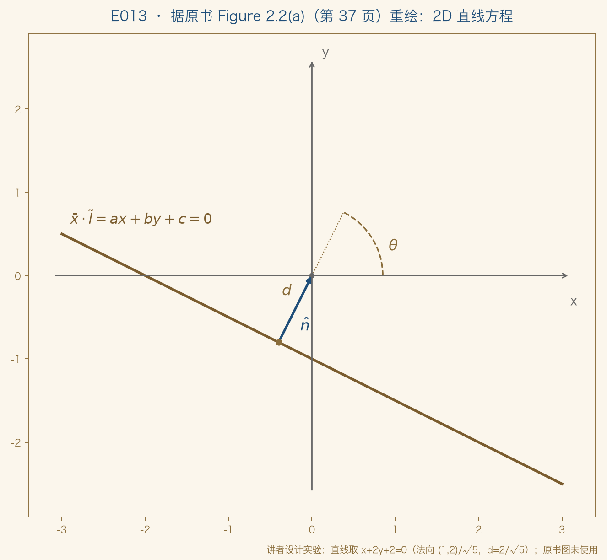
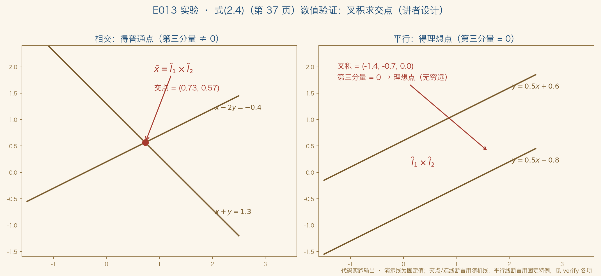
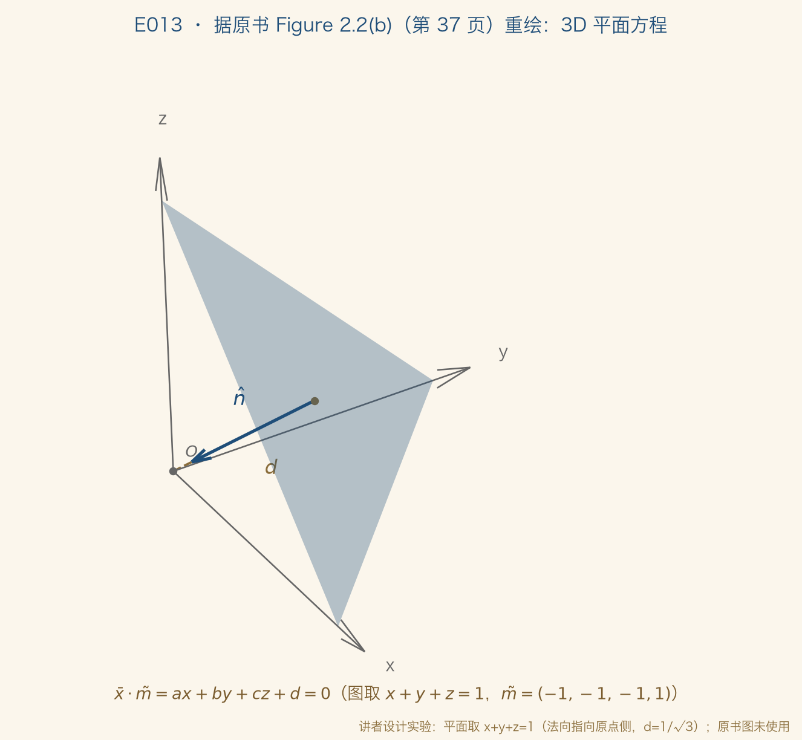
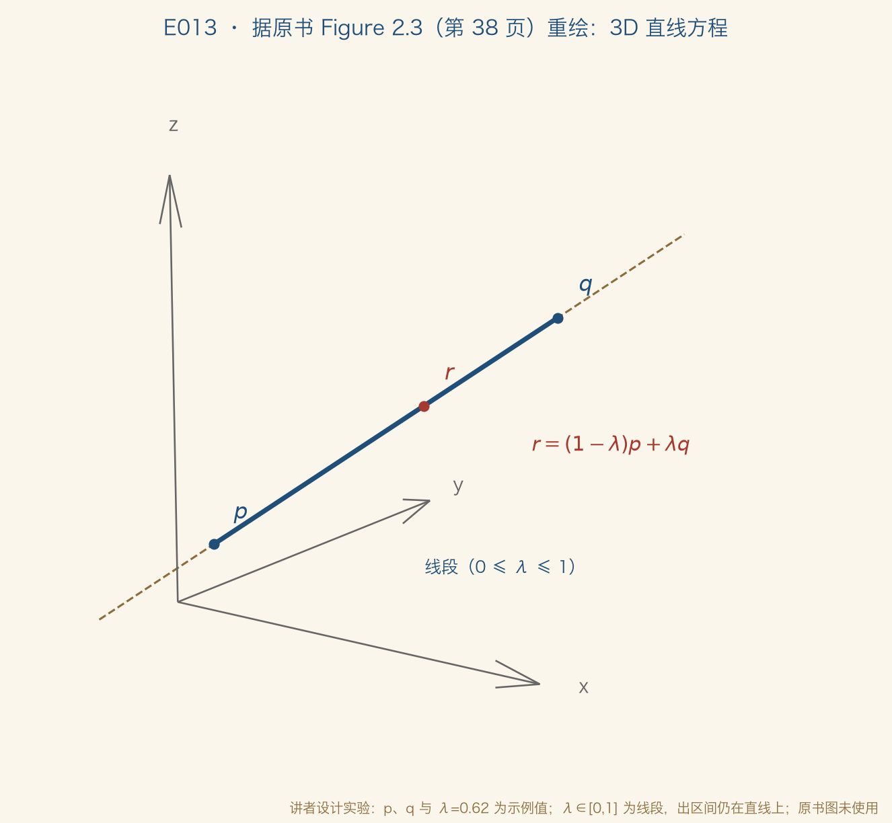

正课 · 05 · 第 2 章 图像形成
三维世界如何压进二维平面
点、线、面与投影 · §2.1 几何基元
四段：① 词汇表为何打头 ② 2D：点 · 线 · 二次曲线 ③ 3D：点 · 面 · 线（含 Plücker） ④ 盘点与预告
导览 · GEOMETRIC PRIMITIVES
先备词汇，再谈投影
基本构件
几何基元是描述三维形状的基本构件：点、线、面曲线、曲面、体积留给 §7.3 / §12.2 / §13.3 / §13.5（原书第 36 页）
作者提示
学过图形学可略读本节，但射影深度与物体中心投影可能是新的原书第 35 页「A note to students」，两段在 §2.1.4 后半
讲者按：词汇表不是缩水的目录，是全书的通用货币（讲者归纳）
讲者按：E002 的比喻版齐次坐标，这集起换成原书正式定义
基元 · 2D POINTS
2D 点：像素坐标与添一格
x = (x, y) ∈ R²，或写成列向量 —— 式(2.1)，原书第 36 页
x̃ = (x̃, ỹ, w̃) ∈ P²，只差倍数算同一点；x̃ = w̃·x̄（式 2.2）
理想点：w̃ = 0 的齐次点，没有普通坐标对应——原书定义（第 36 页）；铁轨/消失点例子为讲者补充：消失点是理想点的投影（E002）
基元 · 2D LINES
2D 线：点与线，同一种运算
l̃ = (a, b, c)：x̄·l̃ = ax + by + c = 0 —— 式(2.3)，第 36 页
讲者按：点与线对等——「点在线上」就是内积为零（本节最重要的结构）
归一化 l = (n̂, d)：n̂ 单位法向，d 到原点的距离（第 36–37 页）
唯一例外：无穷远线 l̃ = (0, 0, 1)，装着所有理想点，无法归一化（原书第 36 页）
重绘 · FIGURE 2.2(A)
法向量 n̂、距离 d 与夹角 θ

据原书 Figure 2.2(a)（第 37 页）重绘 · 原书图未使用 · 代码实跑输出
基元 · POLAR COORDINATES
(θ, d)：Hough 变换的伏笔
n̂ = (cos θ, sin θ)；(θ, d) 即极坐标 —— 原书第 37 页
第七章预支
Hough 变换找直线，用的正是这套表示（§7.4.2，原书第 37 页）
讲者按
词汇表不是孤立小节——第七章的伏笔，在这里埋下
基元 · CROSS PRODUCT
交点与连线，都是叉积
x̃ = l̃1 × l̃2（两线交点）· l̃ = x̃1 × x̃2（两点连线）—— 式(2.4)(2.5)，原书第 37 页
E002 的两个彩蛋，在原书式(2.4)(2.5)里各就各位（讲者按）
多线共点 / 多点共线：叉积不够，用最小二乘——§8.1.1 与附录 A.2，习题 2.1（原书第 37 页；噪声与练习场为讲者按）
基元 · 2D CONICS
二次曲线：认识一下
x̃T Q x̃ = 0 —— 式(2.6)，原书第 37 页
圆锥曲线
名字由来：平面截 3D 圆锥的截线（原书第 37 页）
本书取舍
多视图几何与标定研究有用，但本书用得不多——不展开（原书第 37 页）
实验 · NUMERICAL CHECK
把词汇表算一遍
19 项数值断言
齐次等价 · 增广往返 · 理想点 · 点在线上 · (n̂,d) 距离 · 叉积交点连线 · 平行线理想点 · 极/球坐标往返 · 3D 两点式与方向式 · Plücker 等价与约束
1 项同步检查
四张输出图与 slides/figures/ 逐字节比对讲者设计实验（非原书内容）
讲者按，最漂亮的一条：两条平行线做叉积，第三个分量恰好为零——交点是理想点，可计算的事实（式 2.4 + 理想点定义）
实验结果 · CROSS PRODUCT DEMO
相交线得交点，平行线得理想点

讲者设计实验 · 式(2.4)（原书第 37 页）数值验证 · 代码实跑输出 · 断言 20/20 全过
基元 · 3D POINTS & PLANES
3D 点与平面：一个模子
3D 点 x=(x,y,z)；面 m̃=(a,b,c,d) —— 式(2.7)，第 37–38 页
归一化 m = (n̂, d)；无穷远面无法归一化 —— 原书第 38 页
讲者按：词汇表的自相似——点在面上，还是内积为零（讲者归纳）
法向量也能用两个角写（球坐标，式 2.8）——原书：采样不均匀，故少用（第 38 页）
重绘 · FIGURE 2.2(B)
3D 平面：法向量与距离

据原书 Figure 2.2(b)（第 37 页）重绘 · 原书图未使用 · 代码实跑输出 ·「只差一维」为讲者按
基元 · 3D LINES
3D 直线：原书承认它不够优雅
r = (1−λ)p + λq —— 两点式；0≤λ≤1 即线段（式 2.9，第 38 页）
r̃ = μp̃ + λq̃；q̃ = (d̂,0) → r = p + λd̂（式 2.10–2.11）
讲者按：一个起点加一个方向——最省事的写法；自由度账本见后两页
重绘 · FIGURE 2.3
r 是 p 与 q 的加权混合

据原书 Figure 2.3（第 38 页）重绘 · 原书图未使用 · 代码实跑输出 ·「加不加限制」为讲者按
基元 · DEGREES OF FREEDOM
端点表示：六个数，管四件事
6 → 4
两个端点六个数，而 3D 直线真正的自由度是 4原书第 39 页原话「too many degrees of freedom」
双平面参数化
把两点分别钉在 z = 0 与 z = 1 平面上，两个 (x, y) 恰好四个数近竖直直线的表示（原书第 39 页）
这套双平面参数化，第十四章光场与 Lumigraph（光图）在用——组织相机扫过物体时看到的光线（原书第 39 页；「钉住光线」为讲者按）
基元 · PLÜCKER COORDINATES
Plücker 坐标与作者的实用主义
L = p̃q̃T − q̃p̃T（4×4 斜对称矩阵）—— 式(2.12)，原书第 39 页
六个独立非零分量，却只有四个自由度：齐次性 + |L| = 0 的二次约束（原书第 39 页）
实用建议
方向 + 可见段内一点，或直接用端点线段是常态（第 39 页，§11.4.8）；深究见 Förstner 2005
讲者按
极小表示是数学洁癖，工程上「够用」就行讲者解读，非原书内容
基元 · 3D QUADRICS
3D 二次曲面：同一句点到为止
x̄T Q x̄ = 0 —— 式(2.13)，原书第 39 页
建模基元
球、椭球、圆柱都是特例；多视图几何里有用（原书第 39 页）
本书取舍
与二次曲线一样：不深究——词汇表点到为止（原书第 39 页）
盘点 · VOCABULARY
一页词汇表，五个对象（讲者归纳）
2D 点
(x, y) ~ x̃；w̃ = 0 理想点式(2.1)(2.2)，第 36 页
2D 线
(a, b, c)；归一化 (n̂, d)式(2.3)，第 36–37 页
3D 点·面
(x, y, z) ~ x̄；(a, b, c, d) ~ (n̂, d)式(2.7)，第 37–38 页
3D 线
两点式 / 方向式 / Plücker式(2.9)–(2.12)，第 38–39 页
讲者归纳：能归一化成「法向 + 距离」的，只有 2D 线与 3D 面；2D 里求交与连线一律叉积——下一集让它们动起来（§2.1.1，Figure 2.4，第 40 页）
NEXT · 词汇表到手
读原书§2.1 开篇（原书第 36–39 页），对照 Figure 2.2（第 37 页）与 Figure 2.3（第 38 页）
作业挑两条平行线，用叉积算它们的交点：确认第三个分量是零，写下这三个数
下一集E014 二维变换族谱：平移、刚体、相似、仿射、射影（§2.1.1）